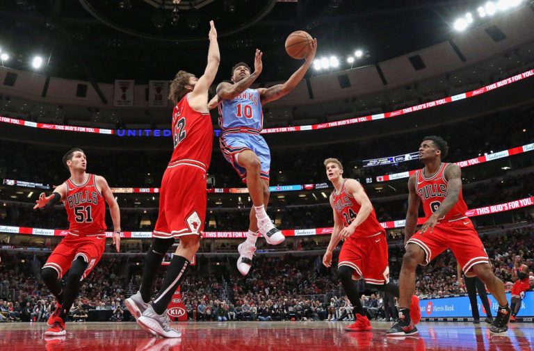

El Partido Inolvidable: Basketlona vs. Titanes
Un día para recordar en la historia de Basketlona. El 15 de mayo de 2023, nuestro equipo se enfrentó a los Titanes en un duelo épico que quedará grabado en la memoria de todos los aficionados.
Un Comienzo Eléctrico
El partido arrancó con una intensidad increíble. Los Titanes, conocidos por su juego físico y defensivo, presionaron desde el primer minuto. Sin embargo, Basketlona respondió con un ataque rápido y certero, liderado por el base Juan "El Mago" Pérez, quien repartió asistencias y anotó triples imposibles.
La Batalla Bajo el Aro
El segundo cuarto fue una lucha encarnizada bajo los tableros. Los pívots de ambos equipos, Pedro "La Roca" Gómez de Basketlona y Carlos "El Gigante" Rodríguez de los Titanes, se batieron en un duelo de titanes. Los rebotes y tapones se sucedían, mientras el público enloquecía con cada acción.
"Nunca había visto un partido con tanta intensidad y pasión. Los jugadores lo dejaron todo en la cancha", declaró un emocionado aficionado al final del encuentro.
El Triple Decisivo
El partido llegó a su clímax en el último cuarto, con el marcador empatado a pocos segundos del final. Fue entonces cuando surgió la figura de María "La Flecha" Sánchez, escolta de Basketlona, quien anotó un triple desde la esquina que hizo estallar el estadio en júbilo. Los Titanes no pudieron responder y Basketlona se llevó la victoria en un final de infarto.
Datos del Partido:
- Resultado Final: Basketlona 98 - Titanes 95
- Máximo Anotador (Basketlona):Juan "El Mago" Pérez (28 puntos)
- Máximo Anotador (Titanes): Carlos "El Gigante" Rodríguez (25 puntos)
- Asistencia: 10.000 espectadores
Este partido no solo fue una victoria para Basketlona, sino una muestra del espíritu de lucha y superación que caracteriza a nuestro equipo. Un partido que quedará grabado en la historia del baloncesto local.